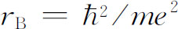

在量子力学的历史上，最引人注目的成就是：对一些简单原子的光谱细节的认识，以及对化学元素表中发现的周期性的认识。在这一章中，我们的量子力学终于讲到这些重要的成就，特别是对氢原子光谱的解释。同时我们将对化学元素的神秘性质作出定性解释。我们将通过详细研究氢原子中电子的行为来做这些——这是我们第一次根据第16章所建立的概念详细地计算（振幅）在空间的分布。
为了完整地描述氢原子，我们必须描述质子和电子两者的运动。在量子力学中，也可以像经典力学那样，把每个粒子的运动描述为相对质心的运动。但我们不这样做。我们将只讨论这样一种近似情况，就是认为质子非常重，从而可把它看作固定在原子的中心。
我们还将作另一个近似，就是不考虑电子具有自旋以及不应用相对论力学规律来描述。因为我们采用非相对论性的薛定谔方程并且忽略磁效应，所以对于我们这样的处理，需要作一些小的修正。小的磁效应之所以存在是因为从电子的观点来看，质子是一个环流电荷，它产生一个磁场。在磁场中，自旋朝上的电子和自旋朝下的电子具有不同的能量。原子能量将相对于我们这里所算得的值稍有移动。我们忽略这一小的能量移动。此外，我们还得想象电子犹如一个陀螺仪在空间运动，始终保持相同的自旋方向。因为我们考虑的是一个在空间的自由原子，所以其总角动量守恒。在我们所作的近似中，我们将假定电子自旋角动量保持恒定不变，因此其他一切原子角动量——通常所谓的“轨道”角动量——也守恒。作为一个很好的近似，电子在氢原子中像一个没有自旋的粒子那样运动——运动的角动量是一个常数。
由这些近似，在空间不同地点找到电子的振幅可以用一个空间位置和时间的函数来表示。设ψ （x ，y ，z ，t ）为时刻t 在某处找到电子的振幅。根据量子力学，这振幅随时间的变化率由哈密顿算符作用于同一函数上给出，由第16章，
而
式中m 为电子质量，V （ r ）为电子在质子静电场中的势能。当电子距离质子很远时取V ＝0，我们可以写出 (1)
波函数ψ 必满足方程式
我们要求具有确定能量的状态，所以试图得到具有下述形式的解
于是函数ψ （ r ）必是下面方程之解：
式中E 是某个常数——原子的能量。
由于势能项只与半径有关，所以在极坐标中解这个方程比在直角坐标中简便得多。在直角坐标中拉普拉斯算符由下式定义
我们想改用图19-1所表示的坐标r ，θ ，φ ，它们与坐标x ，y ，z 之间的关系为
代数计算甚为冗长，但最后你可以证明对任意函数f （ r ）＝f （r ，θ ，φ ），
所以用极坐标，ψ （r ，θ ，φ ）所要满足的方程为
图19-1 点P 的球极坐标r ，θ ，φ
让我们首先设法找出一些非常简单的函数，它们满足令人讨厌的方程式（19.7）。虽然一般说来，波函数ψ 不仅与半径r 有关，而且与角度θ ，φ 有关，但是，我们可以看一下是否可能存在一种特殊情况，这时ψ 与角度无关。对于与角度无关的波函数，如果你转动坐标系，振幅一点也不会改变。这就意味着角动量的所有分量为零。这样的ψ 必定与总角动量为零的态相对应。（实际上，只是轨道角动量为零，因为电子仍有自旋，但我们忽略这部分角动量。）轨道角动量为零的状态有其特定名称，称为“s 态”——你可以记住“s 是（英文）球对称”的第一个字母 (2) 。
现在如果ψ 将不依赖于θ 和φ ，那么整个拉普拉斯算符只包含第一项，方程式（19.7）大为简化：
在开始解这类方程之前，最好作某种标度变换，以除去多余的常数如e 2 、m 和 。这样，代数运算就较为简单。若我们作如下的代换：
及
则式（19.8）变为（两边乘以ρ 后）
这些标度变换意味着，我们以“自然”原子单位的倍数来量度距离r 及能量E 。这就是ρ ＝r /r B ，这里 称为“玻尔半径”，约为 。同样， ，其中 ，此能量称为“里德伯”能量，约为13.6eV。
既然方程两边都有乘积ρ ψ ，那么计算ρ ψ 要比计算ψ 本身来得方便。设
则我们得到形式上更为简单的方程
现在我们必须找到某个函数f ，使它满足方程（19.13），——换句话说，我们必须解一个微分方程。遗憾的是，没有一个很有用的解任何微分方程的一般方法。你只能浪费时间。我们的方程并不容易解，但人们发现可以用下面的步骤来求解。首先，用两个函数的乘积来代替f （它是ρ 的某一函数），
这只是意味着从f （ρ ）中分解出因子 。无疑对任何函数f （ρ ）总可以这样做，这就是把我们的问题变为寻找恰当的函数g （ρ ）。
将式（19.14）代入式（19.13），我们得到下列关于g 的方程
因α 可自由选取，所以可设
于是得到
你们可能认为这个方程并不比式（19.13）更好对付，但令人高兴的是新方程很容易用ρ 的幂级数解出来。（原则上方程式（19.13）也可以这样解，但要困难得多。）我们讲式（19.17）能为某个g （ρ ）所满足，g （ρ ）可以写成下列级数：
式中的a k 是常系数。现在我们所要做的就是找出一组无限多个合适的系数！让我们来验证一下这样的解是可行的。g （ρ ）的一级微商为
二级微商为
把这些表示式用于式（19.17），得
显然还看不出我们已经成功了，我们还得一步一步算下去。如果我们用一个等式来代替第一个求和项，情况会显得好些。既然这个求和中的第一项为零，我们可以将各个k 换成k ＋1而丝毫不影响这一无限级数，这样改换后，第一个求和完全可以写成
现在我们可以把所有的求和放在一起，得到
这一级数必须对所有可能的ρ 值都为零。这只有当ρ 的各次幂的系数分别为零时才可能。如果对所有的k ≥1我们能找到满足下述方程的一组a k ，
则我们将得到氢原子的解。这很容易办到。取任意a 1 ，于是由下式产生所有其他系数
由此式你将得出a
2
，a
3
，a
4
等等，每一对当然都满足式（19.21），我们得到了一个满足式（19.17）的级数g
（ρ
）。我们可以用它构成满足薛定谔方程的ψ
。注意，这个解取决于设定的能量（由α
表示），但对每个 值，都有一个相应的级数。
值，都有一个相应的级数。
虽然我们有了一个解，但它在物理上代表什么呢？通过观察远离质子（大的ρ 值）处发生的情况，我们可以得到一些概念。在远处，级数中的高次项最为重要，所以我们应看一下对于大的k 会出现什么情况。当 时，等式（19.22）近似地为
这意味着
但这些数只是e＋2α ρ 的级数展式中的系数。函数g 是一个迅速增加的指数函数。即使将它与e－α ρ 结合以得出f （ρ ）——参看式（19.14）——当ρ 大时，它给出的f （ρ ）的解仍像e α ρ 那样。我们找到了一个数学上的解，但它并不是一个物理解。这个解相当于电子靠近质子的可能非常小 的情况！在半径ρ 很大的地方更可能找到电子。而我们知道，当ρ 大时束缚 电子的波函数必须趋于零。
* 原文少a 1 。——译者注
我们必须考虑是否有解决此问题的方法。有的。就是观察！如果碰巧α 等于1/n ，这里n 是任意整数，则式（19.22）将使得a n ＋1 ＝0。所有更高的项也将为零。我们就不再有一个无限级数，而是一个有限的多项式。因任何多项式均比e α ρ 增加得慢，所以项e－α ρ 终将迫使f 下降，当ρ 大时函数f 将为零。只有当α ＝1/n ，n ＝1，2，3，4等等时，才有束缚态 的解。
回顾式（19.16），我们看到对于球对称的波动方程，只有当
时，才能存在束缚态解。允许的能量就是这些分数乘以里德伯常数 ，或者说第n 个能级的能量是
顺便指出，对于能量为负值并不难理解。能量之所以为负，是由于当我们选定把势能写成 时，我们把电子在远离质子处的能量取作能量的零点。当电子靠近质子时，它的能量减少，所以在零以下。当n ＝1时能量最小（最负），它随n 增加而增至零。
在量子力学发现以前，从氢原子光谱的实验研究得知氢原子的能级可以用式（19.24）来表示，从观察得出的E R 约为13.6eV。于是玻尔设计了一个（原子）模型，该模型给出了同样的方程，并且预言E R 应为 ，而薛定谔理论能从电子运动的基本方程重新得到了这个结果，这是该理论的第一个巨大成就。
现在我们已经解出了第一个原子，让我们看看所得到的解的性质。把各部分合在一起，每一个解都像这样：
式中

并且
只要我们关心的主要是在不同位置找到电子的相对概率，那么对a 1 可取我们想要的任何数值。我们也可令a 1 ＝1。（人们经常选取a 1 以使波函数“归一化”，使得在原子里面任何地方找到电子的概率总和等于1。目前我们没有必要去这样做。）
就最低的能量状态而言，n ＝1，并且
对于处在基态（最低能量的状态）的氢原子，在任意位置找到电子的振幅随电子离开质子的距离作指数式下降。电子在质子所在处最容易被发现，其特征扩展距离大约为1个ρ 的单位，或约为一个玻尔半径r B 。
取n ＝2得到下一个较高的能级。这个状态的波函数有两项，它为
再下一个能级的波函数为
图19-2中画出了前3个能级的波函数。你们可以看出总的趋势。所有的波函数在ρ 大时都振动几次后就很快趋近于零。事实上，“凹凸”的数目正好等于n ——如果你愿意的话也可说ψ n 通过零点的次数为n －1。
图19-2 氢原子前3个l ＝0的态的波函数（标度的选择使总概率相等）
对ψ n （r ）所描写的状态，我们发现找到电子的概率幅是球对称的——只取决于电子到质子的距离r 。这些状态的轨道角动量为零。现在我们应该查问一下可能与某些角度有依赖关系的状态。
如果愿意，我们可以直接研究怎样去求满足微分方程式（19.7）的、以r ，θ 和φ 为变量的函数这一严格的数学问题——加上附加的物理条件，唯一可接受的函数是当r 大时趋于零的函数。你们将发现在许多书中都是这样处理的。利用我们已有的关于振幅如何依赖于空间角度的知识，我们打算采取一条捷径。
处于任一特定状态的氢原子，是一个具有确定“自旋”j 的粒子，j 是总角动量量子数。该“自旋”的一部分来自电子的固有自旋，另一部分来自电子的运动。因为这两部分独立地起作用（作为一个很好的近似），所以我们仍将不理自旋部分而只考虑“轨道”角动量。然而这种轨道运动的行为很像自旋。例如，若轨道量子数为l ，则角动量的z 分量可以为：l ，l －1，l －2，…，－l 。（我们照例以h为单位进行量度。）而且，我们已经得出的转动矩阵及其他性质仍旧适用。（从现在起我们真正忽略电子的自旋，当我们谈到“角动量”时，我们仅仅指轨道部分。）
鉴于电子在其中运动的势场V 仅取决于r ，而与θ 或φ 无关，哈密顿在所有转动下都是对称的。因此角动量及其所有分量都守恒。（这对在任何 “中心力场”——只依赖于r 的势场——中的运动来说都是正确的，因而并不是库仑势e 2 /r 的独有特性。）
现在让我们来考虑电子的一些可能状态，这些态的内在角结构由量子数l 表征。取决于总角动量相对z 轴的“取向”的角动量z 分量为m ，m 取＋l 到－l 之间2l ＋1个可能值中的一个。设m ＝1，那么在z 轴上某个距离r 处找到电子的振幅是多大呢？零。一个在z 轴上的电子不可能 有任何围绕z 轴的轨道角动量。好，假定m ＝0，那么在离质子的每一个距离处找到电子的振幅可能不为零，我们称此振幅为F l （r ），它就是原子处在状态｜l ，0〉时沿z 轴向上r 处找到电子的振幅。态｜l ，0〉指的是电子具有轨道自旋l 及z 分量m ＝0。
如果我们知道了F l （r ），我们就知道了一切。对于任何状态｜l ，m 〉，我们知道在原子内部任何地方 找到电子的振幅ψ l ，m （ r ）。怎么知道呢？注意，假定原子处在｜l ，m 〉状态，那么在角度θ ，φ 及离原点距离r 处找到电子的振幅是什么呢？在该角度上放一个新的z 轴（参看图19-3），设为z ′。试问在新坐标轴z ′上r 处找到电子的振幅是什么呢？我们知道，除非角动量的z ′分量（称为m ′）为零，否则沿z ′轴不能找到电子。但当m ′＝0时，沿z ′轴找到电子的振幅为F l （r ）。因此，该结果是两个因子的乘积。第一个因子是一个沿z 轴的处于态｜l ，m 〉的原子相对于z ′轴 处于态｜l ，m ′＝0〉的振幅。用F l （r ）乘这个振幅，就得到相对原来的坐标轴在（r ，θ ，φ ）处找到电子的振幅ψ l ，m （ r ）。
图19-3 点（r ，θ ，φ ）位于x ′，y ′，z ′坐标系的z ′轴上
让我们把这个振幅写出来。我们早先已算出了转动的变换矩阵。为从坐标系x ，y ，z 变换到图19-3所示的坐标系x ′，y ′，z ′，可以先绕z 轴旋转角度φ ，然后绕新的 y 轴（y ′）旋转角度θ 。这个组合转动为乘积
转动后找到l ，m ′＝0的态的振幅为
于是我们的结果为
轨道运动只能具有整数的l 值。（如果电子能在r ≠0的任何地方被找到，那么在此方向就具有m ＝0的振幅，而m ＝0的态仅对整数自旋才存在。）关于l ＝1的转动矩阵由表17-2给出。对于更大的l ，可以用我们在第18章所得出的一般公式。R z （φ ）和R y （θ ）的矩阵是分别列出的，但是你们知道如何把它们组合起来。一般说来，应先从态｜l ，m 〉出发，用R z （φ ）作用以得到新的态R z （φ ）｜l ，m 〉（它正好就是 ）。然后再将R y （θ ）作用于这个态而得到态R y （θ ）R z （φ ）｜l ，m 〉。最后乘以〈l ，0｜就给出矩阵元式（19.31）。
转动操作的矩阵元是θ 和φ 的函数。式（19.31）所出现的特殊函数也常出现在许多类型的问题中，这些问题涉及球面几何学中的波，因此给它一个专门名称。注意，并非大家都采用相同的规定，但最常用的一个是
函数Y l ，m （θ ，φ ）称为球谐函数 ，而a 只是一个数字因子，它取决于对Y l ，m 所选取的定义。对于通常的定义是
用此记号，氢原子波函数可写成
角度函数Y l ，m （θ ，φ ）不仅在许多量子力学问题中是重要的，而且在经典物理的许多出现算符 的领域中，例如电磁学中，也是很重要的。作为它们在量子力学中的应用的另一例子，考虑Ne20 激发态的衰变（诸如上章所讨论的）。Ne20 通过发射一个α 粒子而衰变为O16 ，即
假定激发态具有某自旋l （必定是整数），并且角动量的z 分量为m 。我们现在可以提出如下问题：给定l 和m ，则发现α 粒子在与z 轴成θ 角、与xz 平面成φ 角的方向（如图19-4所示）上离去的振幅是怎样的？
图19-4 Ne20 激发态的衰变
为了解此问题，我们首先作下述观察。α 粒子沿z 轴笔直向上的衰变必然来自m ＝0的态。这是由于O16 和α 粒子两者的自旋均为零的缘故，而且其运动不能有任何对z 轴的角动量。让我们称这种振幅为a （单位立体角）。于是为求图19-4所示的任意角度上衰变的振幅，我们只需知道给定的初态在衰变方向具有零角动量的振幅。在θ 和φ 方向衰变的振幅是a 乘以相对z 轴的态｜l ，m 〉在相对z ′（衰变方向）的态｜l ，0〉的振幅。这后一振幅正是式（19.31）中所表示的。所以在θ ，φ 方向见到α 粒子的概率是
作为一个例子，考虑一个具有l ＝1以及各个m 值的初态。由表17-2可知其必需要的振幅，它们是：
这些就是3个可能的角分布振幅——视初始核的m 值而定。
像式（19.36）那样的振幅是经常出现的，而且非常重要，所以有几个名称。如果角分布振幅正比于这3个函数中的任一个或者正比于它们的任何一种线性组合，我们就称“该系统的轨道角动量为1”。或者我们可以说，“Ne20* 发射一个p 波的α 粒子。”或者说，“α 粒子在l ＝1的状态被发射。”因为有许多方式来说明同一事情，所以最好有一本字典。如果你希望明了其他物理学家谈论些什么，你就不得不记住这些语言。表19-1给出了轨道角动量的字典。
如果轨道角动量为零，那么当你转动坐标系时没有什么改变，而且也不随角度变化——对角度的“依赖关系”就是一常数，比方说1。这个态也称为“s 态”，而且就角度依赖关系来说只有一个这样的态。如果轨道角动量为1，那么与角度变量有关的振幅可以为上述3个函数中的任一个——取决于m 之值——或者可以是一个线性组合。这些态称为“p 态”，共有3个。如果轨道角动量是2，则有5个所示的函数。任何线性组合称为“l ＝2”或“d 波”振幅，现在你们可立即猜出下一个字母——在s ，p ，d 以后应出现什么呢？当然是f ，g ，h 等等，照字母顺序排列下去！这些字母并不代表什么意思。（它们曾代表某些意义——它们分别表示原子光谱中的“锐线”、“主线”、“漫线”及“基线”。但这些是当时人们还不知道这些线的来源所定的名称。f 之后就没有特定的名称，所以我们现在只是按g ，h 等等继续下去。）
表中的角函数有几个名称——在定义中有时对前面的数字因子也采用略微不同的规定。这些函数有时称为“球谐函数”，并写为 ；有时也写作 ，如果m ＝0，就简单地写为P l （cosθ ）。函数P l （cosθ ）称为以cosθ 为变量的“勒让德多项式”，而函数 称为“连带勒让德函数”。在许多书中你们都可找到有关这些函数的表。
表19-1 轨道角动量的字典（l ＝j ＝一个整数）
顺便请注意，对给定l 的所有函数都具有这种性质，它们有相同的宇称——在反演时，对奇数l ，它们改变符号；而对偶数l ，它们不改变符号。所以我们可以把轨道角动量为l 的态的宇称写成（－1） l 。
正如我们已经知道的，这些角分布可能涉及核衰变或某种别的过程，或在氢原子中某处找到电子的振幅分布。例如，若一电子处于p 态（l ＝1），则找到它的振幅可能以多种方式依赖于角度——但都为表19-1中l ＝1的3个函数的线性组合。让我们看一下cosθ 的情形，这是很有趣的。这意味着在上半部分（θ ＜π /2）振幅是正的，而在下半部分（θ ＞π /2）振幅是负的，当θ ＝90°时振幅为0。将此振幅平方，我们看到，找到电子的概率随角θ 的变化如图19-5所示——与φ 无关。这种角分布说明了这样的事实，在分子键联中，处在l ＝1的态的电子对另一个原子的吸引与方向有关——它是化学吸引的定向原子价的来源。
图19-5 cos2 θ 在极坐标中的曲线图。它是处于l ＝1，m ＝0的原子态中，在相对于z 轴的不同角度处（对一定的r ）找到电子的相对概率
在式（19.35）中我们已经把氢原子的波函数写为

这些波函数必定是微分方程式（19.7）的解。让我们看看这意味着什么。将式（19.37）代入（19.7），得：
现用r 2 /F l 与上式相乘并重新整理，结果为
此方程的左边部分仅与θ ，φ 有关，而与r 无关 。不论我们对r 取什么值，左边部分都不变。右边也必然是这样 。虽然方括号内的量到处都包含r ，但整个量并不取决于r 。否则此等式就不会对所有的r 都成立。正如你们可看到的，方括号内的函数也与θ 及φ 无关。它必为某个常数。该常数的值很可能与我们所研究的态的l 值有关，因为函数F l 必定是一个适合此状态的函数。我们称此常数为K l 。因此方程（19.35）与两个 方程等价：
现在来看看我们做了些什么。对于任意的由l 和m 描述的态，函数Y l ，m 是知道的，我们可以用式（19.40）来确定常数K l 。将K l 代入式（19.41）就得到一个关于函数F l （r ）的微分方程。若能解出关于F l （r ）的方程，（19.37）中的所有部分都有了，我们就可给出ψ （ r ）。
K l 是什么呢？首先，注意到对各个m （对应于一个特定的l ）K l 必然相同，所以对Y l ，m 我们可以随意选取任一m ，并把它代入式（19.40）以解得K l 。选用Y l ，l 可能最为简单。由式（18.24）可得
R y （θ ）的矩阵元也很简单：
式中b 为某个数 (3) 。把两式合并，得
将此函数代入式（19.40）得
K l 一旦确定，式（19.41）就告诉我们径向函数F l （r ）。当然，式（19.41）就是角度部分被K l F l /r 2 所代替的薛定谔方程。让我们重新将式（19.41）写成式（19.8）的形式，即
势能中增加了很神秘的一项。虽然此项是由数学把戏得到的，但它有一个简单的物理起源。我们可用半经典的论证来给你们一些关于它的出处的概念。这样或许你们就不会觉得它太神秘了。
想象一经典粒子围绕某个力心运动。总能量守恒，并且为势能与动能之和，
通常可将v 分解成径向分量v r 和切向分量 ，于是
那么角动量 也是守恒的，设其等于L ，于是我们可写成
而能量为
如果没有角动量，上式仅有前两项，加进角动量L 对能量的影响就相当于在势能中加进了项L 2 /2m r 2 ，但这几乎正是式（19.46）中的额外项，唯一的差别是看来角动量为 而不是我们所期望的 。但我们在前面（例如第2卷§34-7）就已经看到，要使准经典的论证同正确的量子力学计算结论相一致通常就得作这个替代。于是，我们可以把这新的项理解为“赝势”，它给出转动系统中出现在径向运动方程中的“离心力”项（参考第1卷§12-5有关“赝力”的讨论）。
我们现在就来解关于F l （r ）的方程式（19.46）。它与式（19.8）很相像，所以能用相同的技巧来解。每一步都与以前的做法一样，一直到式（19.19），此时将多出一项
这一项也可写为
（我们提出第一项，并将求和指数k 向后移动1。）代替式（19.20）的是
只有一项包含ρ －1 ，所以这项必为零。系数a 1 必为零（除非l ＝0，而l ＝0时我们就得到以前的解）。令方括号对每个k 皆为零，则其他各项都为零（取代式（19.21））的条件为
这是对球对称情况的唯一有意义的改变。
与前相同，如果我们要有能描述束缚电子的解，则级数必须中断。若αn ＝1，则级数将在k ＝n 处终止。我们又得到关于α 的相同条件，α 必须等于1/n ，这里n 是某个整数。然而式（19.50）还给出一个新限制，指数k 不能等于l ，否则分母为零，a l ＋1为无限大。这样，因a 1 ＝0，由式（19.50）可知所有相继的a k 也都为零，直到不为零的a l ＋1。这就意味着k 必须从l ＋1开始到n 终止。
我们的最终结果为：对任一l 存在许多可能的解，我们称这些解为F n ，l ，而n ＞l ＋1。每个解具有能量
具有此能量且角量子数为l 及m 的状态，其波函数为
而
系数a k 由式（19.50）得到。我们最终对氢原子的状态有了一个完整的描述。
让我们回顾一下我们所发现的结果。满足电子在库仑场中的薛定谔方程的状态，由3个都为整数的量子数n ，l ，m 来表征。电子振幅的角分布只能具有某些确定的形式，称之为Y l ，m 。它们用总角动量量子数l ，及磁量子数 m 来标记，磁量子数m 可以从－l 变到＋l 。对于每一种角位形，电子振幅的多种径向分布F n ，l （r ）都是可能的，它们用主量子数 n 来标记——n 可以从l ＋1变化到∞。状态的能量只与n 有关，并随n 的增大而增加。
能量最低的状态，或基态，为s 态。对这个态l ＝0，n ＝1，m ＝0，它是一个“非简并”态——具有此能量的状态只有一个，其波函数是球对称的。在中心处发现电子的振幅最大，随着离中心的距离增加而单调地减小，我们可以把电子的振幅想象为如图19-6（a）所示的一个球。
图19-6 表示氢原子一些波函数的一般性质粗略的草图。暗区表示振幅大的地方。各区的正负号表示该区振幅的相对符号
对n ＝2，3，4…等较高的能量还有其他s 态。对于每一个能量只有一种形式（m ＝0），且都为球对称。随着r 的增加，这些态的振幅一次或多次改变符号。这些振幅有n －1个球形节面——ψ 趋于零的地方。例如2s 态（l ＝0，n ＝2）看上去将如图19-6（b）中所画的那样。（暗区表示振幅大的地方，正负号表示振幅的相对相位。）图19-7中第一列所示即为s 态的能级。
图19-7 氢原子能级图
此外尚有l ＝1的p 态。对每个n （n 必须为2或更大），有3个能量相同的状态，对m ＝＋1，m ＝0和m ＝－1各有一个。能级如图19-7所示。这些态的角度依赖关系列在表19-1中。例如，对于m ＝0，如果当θ 接近0°时振幅为正，则θ 接近180°时，振幅将为负。所以存在一个与xy 平面重合的节面。对于n ＞2，也有球形节面。图19-6（c）画出了n ＝2，m ＝0振幅的大致情形，图19-6（d）画出了n ＝3，m ＝0波函数的大致情形。
你们可以想象，既然m 表示在空间中的某种“取向”，那么应该有振幅峰值沿x 轴或y 轴的类似的分布。这些可能是m ＝＋1和m ＝－1的态吗？不是。但是既然这3个状态的能量相同，那么这3个态的任意线性组合也将是具有相同的能量的定态。结果，“x ”态——对应于“z ”态或图19-6（c）的m ＝0的态，是m ＝＋1及m ＝－1的态的线性组合。相应的“y ”态为另一组合。明确地讲，我们意指
当以它们的特定坐标轴为参考轴时，这些态都看上去是一样的。
对每一个能量，d 态（l ＝2）有5个可能的m 值，最低能量为n ＝3。其能级如图19-7所示，其对角度的依赖关系更加复杂。例如m ＝0的态有两个圆锥形的节，所以当你们由北极绕至南极时，波函数的相位从＋到－再变到＋。它们分别对于n ＝3以及n ＝4的m ＝0的状态，振幅的大致形式画在图19-6的（e）及（f ）中。同样较大的n 的振幅具有球形节。
我们不准备再描述可能的状态了。你们可在许多书中找到有关氢原子波函数的更为详细的描述。有两本很好的参考书，一本是鲍林（L．Pauling）和威尔逊（E．B．Wilson）的《量子力学导论 》，另一本是莱顿（R．B．Leighton）的《近代物理原理》 。在这些书中你们都会找到一些函数的图形及许多态的表示图。
我们希望提一下，对较高的l ，波函数有一个特点：对l ＞0的情形，在中心处的振幅为零。这并不奇怪，因为当电子的轨道半径非常小时，它很难具有角动量。根据这个道理，l 越大，振幅被“推离”中心的就越远。如果你观察r 很小时径向函数F （r ）的变化方式，则由式（19.53）发现
这种对r 的依赖关系意味着，对于较大的l ，必须在远离r ＝0的地方才会有可观的振幅，顺便指出，这种性质取决于径向方程中的离心力项，所以同样的结论适用于任何在r 很小时变化比1/r 2 更慢的势——大多数原子的势都是这种势。
我们现在要以近似的方式应用氢原子的理论来了解一下化学家的元素周期表。原子序数为Z 的元素，有Z 个电子被核的电吸引力聚集在一起，而电子之间又互相排斥。为了得到严格的解，我们需求解Z 个电子在库仑场中的薛定谔方程。对于氦，其方程为
式中 是作用于 r 1 的拉普拉斯算符， r 1 是一个电子的坐标， 作用于 r 2 ，而 （我们再次忽略电子的自旋）。为了得到定态和能级，我们要求如下形式的解
几何关系包含在f 中，它是6个变量——两个电子同时的位置——的函数。虽然最低能量状态的解已用数值法求得，但没人能得出解析形式的解。
对具有3，4或5个电子的原子，想要得到严格解是没有希望的，至于说量子力学已经对周期表给出了精密的解释，那是太过分了。但是，至少可用它——甚至是一种粗糙近似，还要加上一些修正——定性地了解周期表中揭露出来的许多化学性质。
原子的化学性质主要决定于它的最低能量状态。我们可以利用下面的近似理论来求这些态及其能量。首先，除了 采纳不相容原理，即任一特定的电子态只能由一个电子占据外，其余情况下我们忽略电子的自旋。这意味着任一特定的轨道组态最多只能有两个 电子——一个自旋朝上，另一个自旋朝下。其次在我们的第一级近似中，不考虑电子之间相互作用的细节，而认为每一个电子都在核及其他电子共同组成的有心力场 中运动。例如氖，它有10个电子，我们说一个电子感受到的平均势是由核加上其他9个电子所产生的。于是我们可想象在薛定谔方程里，对每个电子我们给予一个势V （r ），它是来自其他电子的球对称电荷密度修正后的1/r 势场。
在此模型中，每个电子像独立粒子那样行动。它的波函数对角度的依赖关系与氢原子中的情形完全相同。它有s 态、p 态等等，并且它们将具有各种可能的m 值。因为V （r ）不再与1/r 相同，所以波函数的径向部分将稍有不同，但在定性方面将相同，所以我们有相同的径向量子数n 。状态的能量也会有点不同。
氢
让我们来看看根据这些概念可得到些什么。氢的基态具有l ＝m ＝0及n ＝1，我们称该电子的组态为1s 态。能量为－13.6eV。这意味着把电子拉出原子需要13.6eV能量。我们称此能量为“电离能”，用符号W I 表示。电离能越大，就越难使电子脱离，一般说来，电离能大的材料其化学性质就不大活泼。
氦
现在来看氦。它的两个电子可处于同一个能量最低的状态（一个自旋朝上，另一个朝下）。在此最低能量状态，电子在一势场中运动，这个势对小的r 就像z ＝2的库仑场，而对大的r ，就像z ＝1的库仑场。结果是一个“类氢”的1s 态，它的能量稍低。两个电子占据同一1s 态（l ＝0，m ＝0）。所观察到的电离能（移去一个电子）为24.6eV。因为现在1s 壳层已填满了——只允许两个电子占据该壳层——因此电子被其他原子吸引去的趋势实际上并不存在。氦在化学上是惰性的。
锂
锂原子核有3个单位的电荷。电子态又是类氢的，3个电子占据最低的3个能级。两个电子进入1s 态，第三个电子进入n ＝2的态。但l ＝0呢还是l ＝1？在氢原子中这两个态的能量相同，但在其他原子中则不然，原因如下，还记得2s 态在核附近有一定的振幅，而2p 态则没有。这就意味着2s 态的电子感受到部分锂核的三重电荷，但2p 电子却待在外面，该处的电场很像单个电荷所形成的库仑场。这额外的吸引力使得2s 态的能量相对于2p 态能量有所降低，能级大致如图19-8所示——你们应将此图与氢原子相应的能级图19-7比较。所以锂原子有两个电子在1s 态，一个电子在2s 态。因2s 电子比1s 电子具有较高的能量，所以2s 电子比较容易脱离。锂的电离能仅为5.4eV，其化学性质非常活泼。
图19-8 当有其他电子存在时原子中电子能级示意图（标度与图19-7不同）
表19-2 周期表中前36个元素的电子组态
由此你们能够看出逐步显现出来的模式了；我们在表19-2中列出了前面36种元素，表明每个原子处于基态时电子所占据的状态。表中给出了束缚得最松的电子的电离能以及占据各个“壳层”的电子数，这里，壳层指的是n 相同的状态。因为不同l 的态具有不同的能量，每个l 值与一个有2（2l ＋1）个可能状态（不同的m 及电子自旋）的支壳层相对应。除了一些我们忽略的微弱的效应之外，这些态都具有相同的能量。
铍
铍与锂相似，除了在2s 态有两个电子，还有两个电子在充满的1s 壳层。
硼到氖
硼有5个电子，第五个电子必然进入2p 态。因为2p 态有2×3＝6个不同的状态，所以我们可不断增加电子直到总数达到8个电子。这样就得到氖。当电子增加时，原子序数Z 也增加，所以整个电子的分布越来越接近原子核，以至2p 态的能量下降。到氖时电离能增至21.6eV。氖不易失去电子。它已没有多余的低能空位供电子填充，因此它不会试图攫取额外的电子。在化学性质上氖是惰性的。另一方面，氟确实 有一个空的可供电子填入的低能状态，所以氟在化学反应中很活泼。
钠到氩
对钠来说，第11个电子必须开启一个新的壳层——进入3s 态。这个态的能级很高，电离能急剧下降，因此钠是一个活泼的化学元素。从钠到氩，n ＝3的s 态和p 态完全按照从锂到氖那样的次序来填充，在外面空的壳层里，电子的角度组态具有相同的次序，电离能的变化情况也很相似。由此可以看出为什么随着原子序数的增加化学性质会重复，镁在化学性质上非常像铍，硅像碳，氯像氟，氩像氖那样是惰性的。
你们可能已经注意到，在锂与氖之间，电离能的次序略微有点异常，钠和氟之间也有类似的情况。氧原子对最后一个电子的束缚比我们预期的要稍微弱一些。硫也有类似的情况。这是什么原因呢？如果我们加进一点各个电子之间的相互作用效应，对这一情形就能理解了。考虑一下将第一个2p 态的电子放进硼原子的情况。有6种可能——3种可能的p 态，每个p 态有两种自旋。想象一自旋朝上的电子进入m ＝0的状态，这一状态也称为“z ”态，因为它紧靠z 轴。碳的情况将如何呢？现有2个2p 电子。如果其中一个进入“z ”态，第二个电子将进入什么态？如果它远离第一个电子，它具有较低的能量，譬如说它进入2p 壳层的“x ”态就行。（记住，这个态就是m ＝＋1及m ＝－1态的线性组合。）接下来，轮到氮，如果3个2p 态电子分别处于“x ”，“y ”和“z ”组态，则它们将具有最低的相互排斥能。但是对氧就不同了，第四个电子必须以相反的自旋进入一个已被填充的态。于是它受到已经在这个态的电子的强烈排斥，所以它的能量不如在其他情况下可以达到的那样低，因而更容易被移去。这就解释了出现在氮和氧之间以及磷和硫之间的结合能次序上的中断现象。
钾到锌
在氩以后，你们首先可能认为新加的电子将开始填充3d 态。但并非如此。根据前面的描述——以及图19-8中说明的——角动量较高的状态其能量要上移。到3d 态时，其能量已比4s 态的能量高出一些。所以在钾中，最后一个电子进入4s 态。这个壳层到钙原子被填满后（有两个电子），就开始对钪、钛、钒填3d 态。
3d 和4s 态的能量十分接近，所以很小的影响就能使两者的差额由正变负或由负变正。当我们把4个电子放入到3d 时，它们的排斥作用使4s 态的能量上升到刚好高于3d 态能量，所以一个电子移回来了。对于铬，我们不是得到预期的4、2组合，而是5、1组合。增加一个新电子就得到锰，此电子重新填入4s 壳层，此后3d 态壳层被一一填满，直到铜为止。
因锰、铁、钴和镍中最外面的壳层具有相同的组态，所以它们都倾向于具有相似的化学性质。（此效应对稀土元素更为明显，它们都具有相同的外壳层，而其逐步填充对化学性质的影响很小的内壳层。）
在铜原子中，一个电子从4s 态壳层中被夺走，最后将3d 壳层填满。然而，铜的10、1组态的能量与9、2组态的能量是如此接近，只要附近有另一个原子存在，就能改变两者的平衡。由于这个原因，铜的最后两个电子差不多是相等的，所以铜可以是1价也可以是2价。（它有时表现出好像其电子处于9、2组态。）在其他地方也发生类似的情况，这说明了其他金属，如铁，在化合时具有两种原子价的事实。到锌为止，3d 和4s 两壳层都完全填满了。
镓到氪
从镓到氪，填充次序重又正常地继续下去，对4p 壳层进行填充。外壳层、能量和化学性质重复着从硼到氖及从铝到氩的模式。
氪像氩和氖一样，是有名的“稀有”气体，在化学上这三者都是“惰性的”。这只是意味着，由于能量相对较低的壳层已填满，在与其他元素进行简单化合时，它们在能量上具有优势的情况是很少的。具有一个满壳层是不够的。铍和镁具有填满的s 壳层，但这些壳层的能量太高，不能使得元素稳定。同样，我们会期望在镍的位置上出现另一个“稀有”元素，假如其3d 壳层的能量更低些（或4s 壳层能量更高些）的话。另一方面，氪并非完全惰性，它和氯会形成一弱键化合物。
既然我们所举实例已说明了周期表的大多数主要性质，所以我们就讨论到第36号元素为止——还有70多个元素！
我们想再指出一点：我们不仅能在一定程度上了解原子价，而且也可以讲些关于化学键的方向性质。取一个原子，如氧，它有4个2p 电子。前3个电子处于“x ”，“y ”，“z ”态，而第四个电子将重复这些态中的一个，留下两个态——譬如说“x ”和“y ”——空着。接下来考虑H2 O的情形。每一个氢原子都乐意与氧共有一个电子，从而帮助氧填满壳层。这两个电子倾向于进入“x ”和“y ”的空位。所以水分子应有相对氧原子中心成直角的两个氢原子。实际上这个角度为105°。我们甚至能理解为什么这一角度大于90°。由于共有电子，结果氢原子有了净的正电荷。电的排斥作用使波函数“变了形”，把角度扩大到105°。在H2 S中也出现同样的情况。但由于硫原子较大，两个氢原子隔得较远，排斥作用较小，所以角度仅扩大到93°。硒原子更大，故在H2 Se中角度非常接近90°。
我们可以用同样的论证来理解氨（H3 N）的几何结构。氮有再容纳3个2p 电子的空位，对“x ”，“y ”，“z ”这三种态各一个。3个氢原子应彼此联成直角。但构成的角度稍大于90°——又是电斥力的缘故——但至少我们看到为什么H3 N不是扁平的。磷化氢（H3 P）的角度接近90°，而在H3 As中角度更接近90°。当我们把H3 N描述为一个两态系统时，我们假定它不是扁平的。正是由于这种非扁平性才使氨微波激射器成为可能。现在我们已经看到从我们的量子力学也可以理解分子的形状。
薛定谔方程是物理学的巨大成就之一，由于它提供了解原子结构的根本机理的钥匙，从而对原子光谱、化学以及物质的本性作出了解释。
————————————————————
(1) 电量e 与国际单位制电量q e （库仑）的关系是， 。
(2) 因为这些特定名称是原子物理学常用词汇的一部分，所以你必须记住这些词汇。在本章末，我们将其汇集成一个小“字典”，帮助你们记忆。
(3) 你们可以费些功夫来证明这个数来自式（18.35），但按照§18-4的概念也很容易从第一性原理得出这一结果。态｜l ，l 〉可以由2l 个自旋1/2并且全部朝上的粒子组成，而态｜l ，0〉应有l 个自旋朝上，l 个自旋朝下。在转动下，朝上自旋继续保持朝上的振幅为cosθ /2，而自旋由朝上变为朝下的振幅为－sinθ /2。我们要问的是l 个朝上自旋仍朝上，而其余的l 个朝上自旋变为朝下的振幅是多少。这一情况的振幅为 ，与sin l θ 成正比。